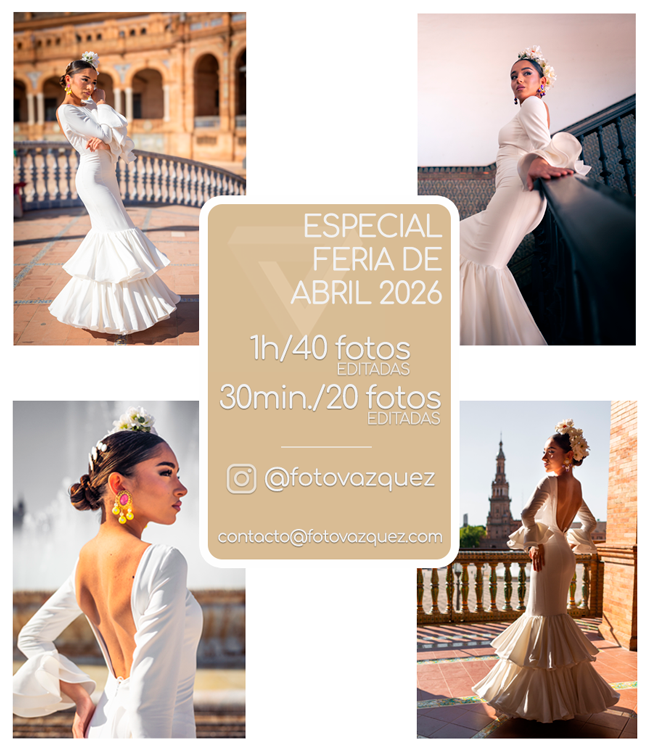

Promociones activas

Especial Feria de Abril 2026
¿Tienes traje de flamenca?. Lúcete en una Sesión fERIA 2026
Para la preferia puedes elegir la localización que más encaje con tu estilo, Plaza de España, Parque Maria Luisa, la zona del río, el centro histórico, etc. Sevilla tiene muchos rincones espectaculares.
O si lo prefieres, en el mismo momento de la feria, en El Real con tu caseta o la portada de La Feria de Abril de Sevilla 2026.
Máximo 5 fotos entre 20 y 40 fotos por sesión.